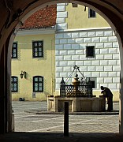
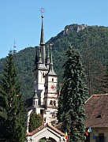

Disclaimer: These pages are not actively maintained, and some of the practical information on the site is out of date. I am working on a new version of the site that will focus more on my photos and memories of travel in Southeast Europe, and less on practical details that too easily become obsolete. In the meantime, please treat the information here with caution.


Council Square
Braşov and Surroundings
The southeastern corner of Transylvania conveniently gathers many of the province's most attractive features into one place. Braşov (Kronstadt in German, Brassó in Hungarian) is one of the most important of the region's Saxon towns, preserving mediaeval and Baroque architecture in the shelter of wooded hills. Within a short journey are towering mountains, rolling fields, thick forests, and villages with fortified churches. There is even a fantasy palace just over the provincial border in Sinaia. You could hit the highlights in a couple of days, and many people do just that, but the area is just as suited to a week or two of relaxed exploration.
Braşov
As your train pulls into Braşov station you may find yourself wondering if the above description refers to a different place entirely. This is quite a large city, and its suburbs of peeling apartment blocks and the concrete wastelands of its Civic Centre are as unlovely as any in Eastern Europe. The post-communist addition of heavy traffic and prefabricated hypermarkets hasn't done much to improve the situation. Have patience: things start looking up as the city funnels into a valley towards the south. Around the carefully tended Central Park, a refuge for chess-playing old men, are administrative buildings reminiscent of many other provincial Austro-Hungarian towns. Beyond the park is the oldest and most attractive part of the city.
Black Church

St Nicholas Church
The pedestrianised Strada Republicii, a lively street lined with cafes and restaurants, cuts through the heart of the old town. At the top is Piaţa Sfatului (Council Square), the showpiece of the Saxon city, a triangle of burgher's houses surrounding the pastel Council House. From the tower of the Council House trumpeters would warn the populace of approaching danger. In some versions of the Pied Piper legend, it is at this point that the children of Hamelin emerged after their underground journey. Squeezed in between the merchant's houses is the Orthodox Cathedral, its little brick tower a reminder that despite appearances, we are not in Hamelin any more. Another interesting Orthodox Church, Sfanta Treime, is hidden away in a courtyard near the square's western corner.
The southern end of the square is dominated Black Church (Biserica Neagră, not actually black these days). It's a rather plain building, with the modern murals on the clock tower adding a welcome splash of colour. The interior is austere, the colour in this case being provided by a collection of old Turkish carpets - a reminder that Braşov's historic prosperity was based on its far-flung trading links. If you arrive from the north or west the church may appear hardly worth noticing - what's one more Gothic cathedral, after all? Coming from the south or east, however, its symbolism is clearer: for most of its history Braşov was a frontier town, and there are no more Gothic churches from here to Istanbul.
If you wander around the quiet streets between the Black Church and Mount Tâmpa you are quite likely to come across a group of tourists staring down an apparently unremarkable alley called Strada Sforii (Rope Street). They are doing this because their guide has just told them (depending on his level of bravado) that this is the narrowest street in Braşov, in Romania, in Europe, or in the known universe. It is apparently a compulsory stop on guided tours of the city, so that two tour groups sometimes end up taking photos of each other from opposite ends.
Continuing south of the Black Church into the every-narrowing valley brings you to the Schei quarter. This was traditionally the Romanian part of the city, and the houses are lower and less ornate than those of the Saxon merchants. It's a an attractive place to explore nevertheless - being a geographical dead-end seems to have preserved it from both traffic and modern development, so that it feels more like a large village than the suburb of a big city. As in many Romanian villages there are many attractive details, such as elaborate door knockers and gaily painted roadside shrines. The most notable building is the Church of St Nicholas, whose slender towers seem to be competing with the nearby mountains - the style is rather unusual for an Orthodox church. Beside it is a small museum on the site of the first Romanian-language school. Further up the valley is the Holy Trinity Church (Pe Tocile), with a multicoloured roof and a large adjoining cemetery.
One of the nice things about staying in Braşov is being so close to the hills and forests. An easy way to get some fresh air is to take one of several footpaths to the top of Mount Tâmpa. An even easier way is to take the cable car from the station below the Hollywood-style "BRAŞOV" sign. However you get there, you will have a great view of the city directly below you, and open countryside in the other direction. For a longer walk, continue up the valley from the Schei district. The city quickly takes on a rural atmosphere as the houses thin out and then disappear completely. If you keep going you will reach a picturesque series of crags called Solomon's Rocks. This is a popular picnic area for locals at the weekend but is quiet at other times.
Bran Castle
Excursions from Braşov
All of the following places can easily be visited as day trips from Braşov; most would also be suitable for an overnight or longer stay. See below for details of how to get around the area. You could also visit Sighişoara from a base in Braşov - see Three Towns in Transylvania for more information.
Bran, Raşnov, and Zărneşti
An hour or so to the southwest of Braşov is Bran Castle, one of Romania's most famous tourist attractions. This fame is partly due to its rather dubious promotion as "Dracula's Castle". The area has no connection with Bram Stoker's novel, which was set far to the north of here, and only the most tenuous of links with Vlad the Impaler. He may have attacked it once, but even this seems to be far from certain. As seen from outside, the castle undeniably looks like a home fit for a vampire, a Gothic collection of turrets, narrow windowns, and steeply pitched red roofs perched intimidatingly on a rocky outcrop. The interior is altogether more homely, looking less like a vampire's lair than a queen's summer retreat - which is exactly what it was. Just below the castle a small folk museum is worth a quick look.
The castle seems to get an excessive level of attention compared to many of Romania's lesser known but (in my view) more interesting sights. I have noticed that some first-time visitors to the country make it a key goal of their itinerary, which I feel is a mistake. That said, the castle is definitely worth seeing if you will be in the area, and with so much else to see in this part of Transylvania a trip here certainly won't be a waste of time.
Rasnov Fortress
Magura, near Bran
Perhaps the best reason to head for Bran is not the castle but the nearby countryside. At times it seems almost impossibly idyllic, with rolling emerald green fields, neatly constructed hay stacks, colourfully painted wooden farm buildings, and the rocky or snowy summits of the Bucegi looming in the background. Moeciu, on the road south from Bran, is one of the most accessible of these villages. The high settlements of Magura and Peştera feel even more cut off from the world.
This area can also be approached from Zărneşti, a relatively uninteresting town that serves as the starting point for hikes on Piatra Craiului, a solid block of rock that emerges dramatically out of the plain. This is a serious mountain and you would need to be properly prepared for a hike to the summit, but there are options for more casual walking in the area too. The Zărneşti Gorge, a deep cleft in the limestone walls of Piatra Craiului, makes a good target. You can also reach the aforementioned Magura and Peştera villages.
On a prominent hill Between Bran and Braşov, Raşnov Fortress watches over the plain. It is in much less well preserved condition than Bran Castle, and there is not a whole lot to see, but the fortress is worth visiting for the views alone. All the dominant mountains of the area - Postavarul, Piatra Craiului, and the Bucegi - are clearly visible, along with several villages in the plain around Braşov. If you are on foot, you may have to look around to find the footpath that leads uphill from the village to the castle - it's not signposted. Following the road would take a lot longer.
Postavarul
Poiana Braşov
Poiana Braşov is one of Romania's main ski resorts. In summer its high woodland setting on the is a pleasant escape from the city. There are no specific sights in the village, but you can walk or ride in a gondola to a cabana just below the summit of Postavarul Mountain. From this prominent peak there is a wonderful 360-degree view taking in the Predeal Pass, Braşov, and the more distant Bucegi Mountains. From Postavarul and Poiana Braşov itself there is a good choice of well-marked and fairly easy trails, mostly through forest: you can walk to Braşov via Solomon's Rocks, or even as far as Raşnov.
Prejmer
Prejmer
The fortified church is the most distinctive architectural legacy of the Transylvania Germans, a concrete expression of that recurring theme of Eastern European history: the fear of invasion from the East. They are scattered all over the province, but the one in the village of Prejmer, just northeast of Braşov, is amongst the best-preserved and most accessible. Unlike some of the more remote churches, entry to Prejmer is on a reasonably organised basis, so you probably won't have to go looking for someone with a key. In addition to visiting the simple and elegant wood-and-whitewash interior of the church itself, it is possible to climb the stairs leading to cells built into the encircling wall, and to follow a stone corridor all the way around within the wall itself.
Sinaia and the Prahova Valley
Buşteni
Just south of Braşov the main road and railway begin to climb, crossing the ridge of the Carpathians at the Predeal Pass (1038m). This marks the border between the provinces of Transylvania and Wallachia - and between pre-1918 Romania and the Austro-Hungarian Empire. Beyond the pass is the narrow Prahova valley, overlooked by the intimidating rock wall of the Bucegi Mountains to the west, and by gentler slopes to the east.
Strung out along the valley are a number of settlements that have little intrinsic interest but serve as bases for hiking or skiing: Predeal, Azuga, and Buşteni. The last of these, overlooked by the huge cross at the summit of Caraiman, is the starting point for a number of marked trails into the Bucegi Mountains. If the sight of the towering cliffs puts you off, and well it might, there is a cable car to take you to a height of more than 2000m (beware of long queues at weekends). From the upper station you can hike back to the valley, towards Bran, or to one of several mountain cabanas in the area. Don't overlook the possibility of a less demanding walk in the mountains to the west of the valley - although these hills are less dramatic, they do offer panoramic views of the Buçegi. Another easy trail leads through the woods to the Urlătorea Waterfall, a popular excursion spot. The Romanian appreciation of the great outdoors is never more obvious than at Buşteni station on a Sunday evening in summer, when hordes of hikers wait for trains back to Bucharest.
Peleş Palace
A little further south is the town of Sinaia. This is also a possible base for outdoor activities - there is another cable car here. In contrast to the other valley towns, it is an interesting place in itself. The Sinaia monastery is worth a quick look, but it is Peleş Palace that everyone comes to see. Like a number of late 19th century royal palaces in other European countries, Peleş' extravagance arguably takes it past the point where "impressive" ends and "kitsch" begins. The German Renaissance exterior a riot of turrets, murals, columns and statues. The eclectic interior is even more elaborate - I don't think I have ever seen so much carved wood in a single building. Give your eyes a rest by visiting Pelişor Palace, a smaller and more restrained mansions in the same grounds. The Art Nouveau interior decoration with Celtic motifs reflects the taste of Queen Marie, for whom it was built.
Practicalities
Braşov is an important tourist destination and accommodation options include hostels, private rooms, hotels, pensions, and apartments (better value than hotels if you are staying more than a few days). Good value seems a little harder to find than in other places in Romania, especially in the central area. For those wishing to get away from the city, rural tourism is well developed in the villages around Bran.
Braşov is a good place to to do some shopping before an exploration of more rural parts of Romania - there are a couple of reasonably good bookshops and outdoor gear specialists.
As Braşov sprawls over a wide area, and the train and bus stations are a long walk from the centre, you are quite likely to use the local transport system - a mixture of buses and trolleybuses. As in other Romania cities many of the vehicles are hand-me-downs from other countries, so you can while away your journey by memorising the public transport maps of provincial Swiss cities. As usual, buy tickets in advance from kiosks, and don't forget to validate them.
Braşov is well connected by train. There are more than 20 daily trains to Bucharest (2.5 hours), more than 15 to Sighisoara (2 hours) of which 7 continue to Cluj (5 hours), and 8 to Sibiu (3 hours). Quite a few of these leave at inconvenient times, and there are some long gaps between services during the day, so check timetables carefully. There is also a single overnight train to Suceava (8 hours), and 3 direct international services to Budapest (11 hours). One of these continues to Vienna and another to Bratislava and Prague. Getting to Bulgaria or Istanbul requires a change in Bucharest.
Leaving Braşov by bus involves figuring out which rundown bus station serves your destination. Most long-distance buses, including minibuses to Bucharest and Sibiu, leave from Autogara #1 beside the train station.
Buses to Bran and Raşnov leave from Autogara #2, in a rather hard-to-find location in the Bartolomeu district, some distance to the west of the train station. They leave at least hourly for most of the day, more frequently on working days, and continue past Bran to Moeciu. Buses to Bran stop at the edge of Raşov so it's easy to visit both in the same day. There is a reasonably good service to Zărneşti from the same station. When I visited there was also a train service to Raşnov and Zarneşti, but I have been unable to confirm if it still runs.
Buses to Poiana Braşov are run by the local transport operator and leave from yet another different location. At least it's a more convenient one: the Livada Postei stop near the Central Park. The trip takes less than 30 minutes and departures are half hourly. You might also consider walking, most likely in the downhill direction (from Poiana Braşov). There are a couple of very pleasant marked trails, one of which follows an old road that is now closed to traffic.
Prejmer is a short train journey from Braşov on the line towards Sfântu Gheorghe. It takes less than 20 minutes to reach the Ilieni halt, which is actually closer to the church than Prejmer station itself. There are only about 6 trains daily during daylight hours so may be better off getting one of the more frequent maxitaxis - provided, that is, you can find out where they leave from.
Getting around the Prahova valley is straightforward. All Braşov-Bucharest trains stop at Sinaia, about one hour from Braşov. Personal trains and some fast trains stop at Buşteni. There are also plenty of buses and minibuses along the busy DN1.
More photos of Brasşov in my Romania Galleries